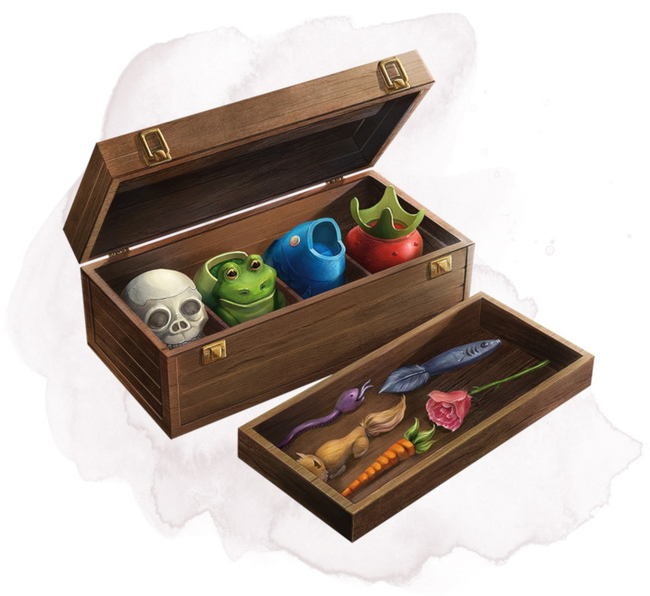

Pigments merveilleux de Nolzur
Objet merveilleux, très rare
Généralement trouvés dans 1d4 pots accompagnés d'un pinceau à l'intérieur d'une fine boîte en bois (pesant 500 grammes au total), ces pigments vous permettent de créer des objets en trois dimensions en les peignant en deux dimensions. La peinture coule du pinceau pour dessiner l'image de l'objet sur lequel vous vous concentrez.
Chaque pot contient assez de peinture pour couvrir 90 mètres carrés de surface (9x10 m) ce qui vous permet de créer des objets inanimés ou des bouts de terrain, comme une porte, un fossé, des fleurs, des arbres, des cellules, des pièces ou des armes, qui font jusqu'à 270 mètres cubes. Il faut 10 minutes pour peindre 9 mètres carrés (3x3 m) de surface.
Une fois la peinture terminée, l'objet ou le terrain dépeint devient réel et non magique. Peindre une porte sur un mur fait apparaître une vraie porte qui peut réellement être ouverte, peu importe ce qui se trouve derrière. Peindre une fosse dans un sol créé un trou dont la profondeur compte dans le total de surface/volume que vous pouvez créer.
Rien de ce qui peut être créé par les pigments ne peut valoir plus de 25 po. Si vous peignez un objet de grande valeur comme un diamant ou un tas de pièce d'or, l'objet semble authentique mais une inspection minutieuse révélera qu'il est fait de pâte, d'os ou autre matériau sans valeur.
Si vous peignez une forme d'énergie comme du feu ou de la foudre, elle apparaît puis se dissipe aussitôt une fois la peinture terminée, ne produisant aucun effet réel.
Chaque pot contient assez de peinture pour couvrir 90 mètres carrés de surface (9x10 m) ce qui vous permet de créer des objets inanimés ou des bouts de terrain, comme une porte, un fossé, des fleurs, des arbres, des cellules, des pièces ou des armes, qui font jusqu'à 270 mètres cubes. Il faut 10 minutes pour peindre 9 mètres carrés (3x3 m) de surface.
Une fois la peinture terminée, l'objet ou le terrain dépeint devient réel et non magique. Peindre une porte sur un mur fait apparaître une vraie porte qui peut réellement être ouverte, peu importe ce qui se trouve derrière. Peindre une fosse dans un sol créé un trou dont la profondeur compte dans le total de surface/volume que vous pouvez créer.
Rien de ce qui peut être créé par les pigments ne peut valoir plus de 25 po. Si vous peignez un objet de grande valeur comme un diamant ou un tas de pièce d'or, l'objet semble authentique mais une inspection minutieuse révélera qu'il est fait de pâte, d'os ou autre matériau sans valeur.
Si vous peignez une forme d'énergie comme du feu ou de la foudre, elle apparaît puis se dissipe aussitôt une fois la peinture terminée, ne produisant aucun effet réel.
Dungeon Master´s Guide (SRD)
